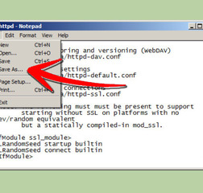
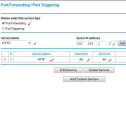
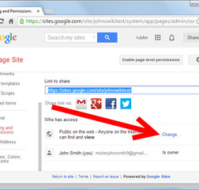

Recommended for you
How to
Host Your Own Website for Free
How to
Choose a Web Host

How to
Install and Configure Apache Webserver to Host a Website from Your Computer
How to
Run A Webserver From Your Computer

How to
Open Your Port 80 Behind a Firewall
How to
Starting Web Hosting Company
How to
Create a Home Network

How to
Make Your Own Google Website